Session 6 – Grouping and combining data
Learning objectives
- Use
group_by()withsummarise()to compute summary values for groups of observations- Use
count()to count the numbers of observations within categories- Combine data from two tables based on a common identifier (
joinoperations)- Customize plots created using ggplot2 by changing labels, scales and colours
Grouping and combining data
In this session, we’ll look at some more useful functions provided by the dplyr package, the ‘workhorse’ in the tidyverse family for manipulating tabular data. Continuing from the last session, we’ll see how we can summarise data for groups of observations within different categories. We’ll also show how dplyr allows us to combine data for the same observational unit, e.g. person or date, that comes from different sources and is read into R in different tables.
We’ll also look at how to customize the plots we create using ggplot2, in particular how we can add or change titles and labels, how we can adjust the way the axes are displayed and how we can use a colour scheme of our choosing.
dplyr and ggplot2 are core component packages within the tidyverse and both get loaded as part of the tidyverse.
library(tidyverse)To demonstrate how these grouping and combining functions work and to illustrate customization of plots, we’ll again use the METABRIC data set.
metabric <- read_csv("data/metabric_clinical_and_expression_data.csv")
metabric## # A tibble: 1,904 × 32
## Patient_ID Cohort Age_at_diagnosis Survival_time Survival_status Vital_status
## <chr> <dbl> <dbl> <dbl> <chr> <chr>
## 1 MB-0000 1 75.6 140. LIVING Living
## 2 MB-0002 1 43.2 84.6 LIVING Living
## 3 MB-0005 1 48.9 164. DECEASED Died of Dis…
## 4 MB-0006 1 47.7 165. LIVING Living
## 5 MB-0008 1 77.0 41.4 DECEASED Died of Dis…
## 6 MB-0010 1 78.8 7.8 DECEASED Died of Dis…
## 7 MB-0014 1 56.4 164. LIVING Living
## 8 MB-0022 1 89.1 99.5 DECEASED Died of Oth…
## 9 MB-0028 1 86.4 36.6 DECEASED Died of Oth…
## 10 MB-0035 1 84.2 36.3 DECEASED Died of Dis…
## # ℹ 1,894 more rows
## # ℹ 26 more variables: Chemotherapy <chr>, Radiotherapy <chr>,
## # Tumour_size <dbl>, Tumour_stage <dbl>, Neoplasm_histologic_grade <dbl>,
## # Lymph_nodes_examined_positive <dbl>, Lymph_node_status <dbl>,
## # Cancer_type <chr>, ER_status <chr>, PR_status <chr>, HER2_status <chr>,
## # HER2_status_measured_by_SNP6 <chr>, PAM50 <chr>, `3-gene_classifier` <chr>,
## # Nottingham_prognostic_index <dbl>, Cellularity <chr>, …Grouping observations
Summaries for groups
In the previous session we introduced the summarise()
function for computing a summary value for one or more variables from
all rows in a table (data frame or tibble). For example, we computed the
mean expression of ESR1, the estrogen receptor alpha gene, as
follows.
summarise(metabric, mean(ESR1))## # A tibble: 1 × 1
## `mean(ESR1)`
## <dbl>
## 1 9.61While the summarise() function is useful on its own, it
becomes really powerful when applied to groups of observations within a
dataset. For example, we might be more interested in the mean ESR1
expression calculated separately for ER positive and ER negative
tumours. We could take each group in turn, filter the data frame to
contain only the rows for a given ER status, then apply the
summarise() function to compute the mean expression, but
that would be somewhat cumbersome. Even more so if we chose to do this
for a categorical variable with more than two states, e.g. for each of
the integrative clusters. Fortunately, the
group_by() function and
.by argument to summarise allow this to be done in one
simple step.
metabric |>
group_by(ER_status) |>
summarise(mean(ESR1))## # A tibble: 2 × 2
## ER_status `mean(ESR1)`
## <chr> <dbl>
## 1 Negative 6.21
## 2 Positive 10.6or
metabric |>
summarise(mean(ESR1), .by = ER_status)## # A tibble: 2 × 2
## ER_status `mean(ESR1)`
## <chr> <dbl>
## 1 Positive 10.6
## 2 Negative 6.21The following schematic contains another example using a simplified subset of the METABRIC tumour samples to show what’s going on.
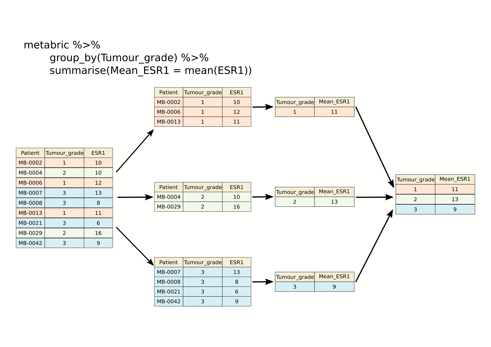
We get an additional column in our output for the categorical
variable, ER_status, and a row for each category.
When we group by only one column there is no difference between the two methods.
Incidentally, we should expect this result of ER-positive tumours having a higher expression of ESR1 on average than ER-negative tumours. Simple summaries like this are a good way of checking that what we think we know actually holds true in the data we’re looking at. Note that the expression values are on a log2scale so ER-positive breast cancers express ESR1 at a level that is approximately 20 times greater, on average, than that of ER-negative tumours.
2 ^ (10.6 - 6.21) # equivalent to (2 ^ 10.6) / (2 ^ 6.21)## [1] 20.96629We can group by more than one column. When we do this there are some differences by between using group_by or .by.
Let’s say we want to look at ERBB2 expression in ER positive and negative, but further divided by the cancer type.
metabric |>
group_by(ER_status, Cancer_type) |>
summarise(mean(ERBB2))## `summarise()` has regrouped the output.
## ℹ Summaries were computed grouped by ER_status and Cancer_type.
## ℹ Output is grouped by ER_status.
## ℹ Use `summarise(.groups = "drop_last")` to silence this message.
## ℹ Use `summarise(.by = c(ER_status, Cancer_type))` for per-operation grouping (`?dplyr::dplyr_by`) instead.## # A tibble: 13 × 3
## # Groups: ER_status [2]
## ER_status Cancer_type `mean(ERBB2)`
## <chr> <chr> <dbl>
## 1 Negative Breast 10.2
## 2 Negative Breast Invasive Ductal Carcinoma 11.1
## 3 Negative Breast Invasive Lobular Carcinoma 11.0
## 4 Negative Breast Invasive Mixed Mucinous Carcinoma 8.70
## 5 Negative Breast Mixed Ductal and Lobular Carcinoma 10.1
## 6 Negative Metaplastic Breast Cancer 8.44
## 7 Negative <NA> 13.6
## 8 Positive Breast 10.4
## 9 Positive Breast Invasive Ductal Carcinoma 10.7
## 10 Positive Breast Invasive Lobular Carcinoma 10.6
## 11 Positive Breast Invasive Mixed Mucinous Carcinoma 10.4
## 12 Positive Breast Mixed Ductal and Lobular Carcinoma 10.5
## 13 Positive <NA> 10.8You can see that the tibble is still grouped by “ER_status”, this means any subsequent operations will be carried out within the groupings based on “ER_status”. Perhaps, after summarising, we want to find which group has the maximum mean ERBB2 expression. We can use the dplyr function slice_max() to get the top result, telling it which column to rank the rows by.
metabric |>
group_by(ER_status, Cancer_type) |>
summarise(ERBB2_mean = mean(ERBB2)) |>
slice_max(ERBB2_mean, n = 1)## `summarise()` has regrouped the output.
## ℹ Summaries were computed grouped by ER_status and Cancer_type.
## ℹ Output is grouped by ER_status.
## ℹ Use `summarise(.groups = "drop_last")` to silence this message.
## ℹ Use `summarise(.by = c(ER_status, Cancer_type))` for per-operation grouping (`?dplyr::dplyr_by`) instead.## # A tibble: 2 × 3
## # Groups: ER_status [2]
## ER_status Cancer_type ERBB2_mean
## <chr> <chr> <dbl>
## 1 Negative <NA> 13.6
## 2 Positive <NA> 10.8This gives us the top value for ER positive and ER negative groups
respectively. Even though we asked for a single row, we got two, because
slice_max() is operating within the retained “ER_status”
grouping.
If we don’t want the grouping to continue to be applied we need to use ungroup().
metabric |>
group_by(ER_status, Cancer_type) |>
summarise(ERBB2_mean = mean(ERBB2)) |>
ungroup() |>
slice_max(ERBB2_mean, n = 1)## `summarise()` has regrouped the output.
## ℹ Summaries were computed grouped by ER_status and Cancer_type.
## ℹ Output is grouped by ER_status.
## ℹ Use `summarise(.groups = "drop_last")` to silence this message.
## ℹ Use `summarise(.by = c(ER_status, Cancer_type))` for per-operation grouping (`?dplyr::dplyr_by`) instead.## # A tibble: 1 × 3
## ER_status Cancer_type ERBB2_mean
## <chr> <chr> <dbl>
## 1 Negative <NA> 13.6Now we get the single highest value across the whole table.
If instead we use .by to do the grouping, you will see that the grouping is dropped after the summarise operation.
metabric |>
summarise(ERBB2_mean = mean(ERBB2), .by = c(ER_status, Cancer_type))## # A tibble: 13 × 3
## ER_status Cancer_type ERBB2_mean
## <chr> <chr> <dbl>
## 1 Positive Breast Invasive Ductal Carcinoma 10.7
## 2 Positive Breast Mixed Ductal and Lobular Carcinoma 10.5
## 3 Positive Breast Invasive Lobular Carcinoma 10.6
## 4 Negative Breast Invasive Ductal Carcinoma 11.1
## 5 Positive Breast Invasive Mixed Mucinous Carcinoma 10.4
## 6 Negative Breast Invasive Lobular Carcinoma 11.0
## 7 Positive Breast 10.4
## 8 Negative Breast 10.2
## 9 Positive <NA> 10.8
## 10 Negative <NA> 13.6
## 11 Negative Breast Mixed Ductal and Lobular Carcinoma 10.1
## 12 Negative Breast Invasive Mixed Mucinous Carcinoma 8.70
## 13 Negative Metaplastic Breast Cancer 8.44You should also notice, that the tibble returned by group_by was sorted by our grouping columns, the tibble returned when using .by is not sorted. In general, using .by is simpler as you don’t have to worry about doing the ungroup() afterwards.
Per-operation grouping is available in other dplyr verbs too,
including slice_max(), so we can do the whole thing without
group_by() at all. Note that mutate(),
filter() and summarise() spell it
.by with a dot, while slice_max() and its
relatives use plain by — the dot avoids any clash with
the columns you are naming in those functions.
metabric |>
summarise(ERBB2_mean = mean(ERBB2), .by = c(ER_status, Cancer_type)) |>
slice_max(ERBB2_mean, n = 1, by = ER_status)## # A tibble: 2 × 3
## ER_status Cancer_type ERBB2_mean
## <chr> <chr> <dbl>
## 1 Positive <NA> 10.8
## 2 Negative <NA> 13.6As we saw in the previous session, we can summarize multiple
observations, e.g. the mean expression for other genes of interest, with
summarise(across()), this time using the PAM50
classification to define the groups.
metabric |>
summarise(across(c(ESR1, PGR, ERBB2), mean), .by = PAM50)## # A tibble: 7 × 4
## PAM50 ESR1 PGR ERBB2
## <chr> <dbl> <dbl> <dbl>
## 1 claudin-low 7.47 5.60 9.85
## 2 LumA 10.8 6.75 10.7
## 3 LumB 11.0 6.39 10.6
## 4 Her2 7.81 5.62 12.6
## 5 Normal 9.50 6.21 10.8
## 6 Basal 6.42 5.46 10.2
## 7 NC 10.9 6.47 10.3We can also refine our groups by using more than one categorical variable. Let’s subdivide the PAM50 groups by HER2 status to illustrate this.
metabric |>
summarise(across(c(ESR1, PGR, ERBB2), mean), .by = c(PAM50, HER2_status))## # A tibble: 13 × 5
## PAM50 HER2_status ESR1 PGR ERBB2
## <chr> <chr> <dbl> <dbl> <dbl>
## 1 claudin-low Negative 7.52 5.61 9.58
## 2 LumA Negative 10.8 6.77 10.6
## 3 LumB Negative 11.1 6.43 10.3
## 4 Her2 Negative 8.82 5.83 10.9
## 5 LumA Positive 10.1 6.13 13.5
## 6 claudin-low Positive 6.80 5.45 13.2
## 7 Normal Negative 9.68 6.28 10.5
## 8 Basal Negative 6.39 5.46 9.83
## 9 Her2 Positive 7.04 5.46 13.8
## 10 LumB Positive 10.2 5.98 13.4
## 11 Basal Positive 6.71 5.45 14.0
## 12 Normal Positive 7.77 5.54 13.5
## 13 NC Negative 10.9 6.47 10.3It can be quite useful to know how many observations are within each
group. We can use a special function, n(),
that counts the number of rows rather than computing a summary value
from one of the columns.
metabric |>
summarise(N = n(), ESR1_mean = mean(ESR1), .by = c(PAM50, HER2_status))## # A tibble: 13 × 4
## PAM50 HER2_status N ESR1_mean
## <chr> <chr> <int> <dbl>
## 1 claudin-low Negative 184 7.52
## 2 LumA Negative 658 10.8
## 3 LumB Negative 419 11.1
## 4 Her2 Negative 95 8.82
## 5 LumA Positive 21 10.1
## 6 claudin-low Positive 15 6.80
## 7 Normal Negative 127 9.68
## 8 Basal Negative 179 6.39
## 9 Her2 Positive 125 7.04
## 10 LumB Positive 42 10.2
## 11 Basal Positive 20 6.71
## 12 Normal Positive 13 7.77
## 13 NC Negative 6 10.9Counts
Counting observations within groups is such a common operation that
dplyr provides a count() function to do
just that. So we could count the number of patient samples in each of
the PAM50 classes as follows.
count(metabric, PAM50)## # A tibble: 7 × 2
## PAM50 n
## <chr> <int>
## 1 Basal 199
## 2 Her2 220
## 3 LumA 679
## 4 LumB 461
## 5 NC 6
## 6 Normal 140
## 7 claudin-low 199This is much like the table() function we’ve used
several times already to take a quick look at what values are contained
in one of the columns in a data frame. They return different data
structures however, with count() always returning a data
frame (or tibble) that can then be passed to subsequent steps in a
‘piped’ workflow.
If we wanted to subdivide our categories by HER2 status, we can add
this as an additional categorical variable just as we did with the
previous group_by() examples.
count(metabric, PAM50, HER2_status)## # A tibble: 13 × 3
## PAM50 HER2_status n
## <chr> <chr> <int>
## 1 Basal Negative 179
## 2 Basal Positive 20
## 3 Her2 Negative 95
## 4 Her2 Positive 125
## 5 LumA Negative 658
## 6 LumA Positive 21
## 7 LumB Negative 419
## 8 LumB Positive 42
## 9 NC Negative 6
## 10 Normal Negative 127
## 11 Normal Positive 13
## 12 claudin-low Negative 184
## 13 claudin-low Positive 15The count column is named ‘n’ by default but you can change this.
count(metabric, PAM50, HER2_status, name = "Samples")## # A tibble: 13 × 3
## PAM50 HER2_status Samples
## <chr> <chr> <int>
## 1 Basal Negative 179
## 2 Basal Positive 20
## 3 Her2 Negative 95
## 4 Her2 Positive 125
## 5 LumA Negative 658
## 6 LumA Positive 21
## 7 LumB Negative 419
## 8 LumB Positive 42
## 9 NC Negative 6
## 10 Normal Negative 127
## 11 Normal Positive 13
## 12 claudin-low Negative 184
## 13 claudin-low Positive 15count() is equivalent to grouping observations calling
summarize() using the special n() function to
count the number of rows. So the above statement could have been written
in a more long-winded way as follows.
metabric |>
summarize(Samples = n(), .by = c(PAM50, HER2_status))Summarizing with n() is useful when showing the number
of observations in a group alongside a summary value, as we did earlier
looking at the mean ESR1 expression within specified groups; it allows
you to see if you’re drawing conclusions from only a few data
points.
Missing values
Many summarization functions return NA if any of the
values are missing, i.e. the column contains NA values. As
an example, we’ll compute the average size of ER-negative and
ER-positive tumours.
metabric |>
summarize(N = n(),
`Average tumour size` = mean(Tumour_size),
.by = ER_status)## # A tibble: 2 × 3
## ER_status N `Average tumour size`
## <chr> <int> <dbl>
## 1 Positive 1459 NA
## 2 Negative 445 NAThe mean() function, along with many similar
summarization functions, has an na.rm argument that can be
set to TRUE to exclude those missing values from the
calculation.
metabric |>
summarize(N = n(),
`Average tumour size` = mean(Tumour_size, na.rm = TRUE),
.by = ER_status)## # A tibble: 2 × 3
## ER_status N `Average tumour size`
## <chr> <int> <dbl>
## 1 Positive 1459 25.6
## 2 Negative 445 28.5An alternative would be to filter out the observations with missing values but then the number of samples in each ER status group would take on a different meaning, which may or may not be what we actually want.
metabric |>
filter(!is.na(Tumour_size)) |>
summarize(N = n(),
`Average tumour size` = mean(Tumour_size),
.by = ER_status)## # A tibble: 2 × 3
## ER_status N `Average tumour size`
## <chr> <int> <dbl>
## 1 Positive 1446 25.6
## 2 Negative 438 28.5Counts and proportions
The sum() and mean() summarization
functions are often used with logical values. It might seem surprising
to compute a summary for a logical variable but but this turns out to be
quite a useful thing to do, for counting the number of TRUE
values or obtaining the proportion of values that are
TRUE.
Following on from the previous example we could add a column to our summary of average tumour size for ER-positive and ER-negative patients that contains the number of missing values.
metabric |>
summarize(N = n(),
Missing = sum(is.na(Tumour_size)),
`Average tumour size` = mean(Tumour_size, na.rm = TRUE),
.by = ER_status)## # A tibble: 2 × 4
## ER_status N Missing `Average tumour size`
## <chr> <int> <int> <dbl>
## 1 Positive 1459 13 25.6
## 2 Negative 445 7 28.5Why does this work? Well, the is.na() function takes a
vector and sees which values are NA, returning a logical
vector of TRUE where the value was NA and
FALSE if not.
test_vector <- c(1, 3, 2, NA, 6, 5, NA, 10)
is.na(test_vector)## [1] FALSE FALSE FALSE TRUE FALSE FALSE TRUE FALSEThe sum() function treats the logical vector as a set of
0s and 1s where FALSE is
0 and TRUE is 1. In effect
sum() counts the number of TRUE values.
sum(is.na(test_vector))## [1] 2Similarly, mean() will compute the proportion of the
values that are TRUE.
mean(is.na(test_vector))## [1] 0.25So let’s calculate the number and proportion of samples that do not have a recorded tumour size in each of the ER-negative and ER-positive groups.
metabric |>
summarize(N = n(),
`Missing tumour size` = sum(is.na(Tumour_size)),
`Proportion missing` = mean(is.na(Tumour_size)),
.by = ER_status)## # A tibble: 2 × 4
## ER_status N `Missing tumour size` `Proportion missing`
## <chr> <int> <int> <dbl>
## 1 Positive 1459 13 0.00891
## 2 Negative 445 7 0.0157We can use sum() and mean() for any
condition that returns a logical vector. We could, for example, find the
number and proportion of patients that survived longer than 10 years
(120 months) in each of the ER-negative and ER-positive groups.
metabric |>
filter(Survival_status == "DECEASED") |>
summarise(N = n(),
N_long_survival = sum(Survival_time > 120),
Proportion_long_survival = mean(Survival_time > 120),
.by = ER_status)## # A tibble: 2 × 4
## ER_status N N_long_survival Proportion_long_survival
## <chr> <int> <int> <dbl>
## 1 Positive 853 325 0.381
## 2 Negative 250 40 0.16Selecting or counting distinct things
There are occasions when we want to count the number of distinct values in a variable or a combination of variables. Here we introduce another set of data from the METABRIC study which contains details of the mutations detected by targeted sequencing of a panel of 173 genes. We’ll read this data into R now as this provides a good example of having multiple observations in different rows for a single observational unit, in this case several mutations detected in each tumour sample.
mutations <- read_csv("data/metabric_mutations.csv")
select(mutations,
Patient_ID,
Chromosome,
Position = Start_Position,
Ref = Reference_Allele,
Alt = Tumor_Seq_Allele1,
Type = Variant_Type,
Gene)## # A tibble: 17,272 × 7
## Patient_ID Chromosome Position Ref Alt Type Gene
## <chr> <chr> <dbl> <chr> <chr> <chr> <chr>
## 1 MTS-T0058 17 7579344 <NA> <NA> INS TP53
## 2 MTS-T0058 17 7579346 <NA> <NA> INS TP53
## 3 MTS-T0058 6 168299111 G G SNP MLLT4
## 4 MTS-T0058 22 29999995 G G SNP NF2
## 5 MTS-T0059 2 198288682 A A SNP SF3B1
## 6 MTS-T0059 6 86195125 T T SNP NT5E
## 7 MTS-T0059 7 55241717 C C SNP EGFR
## 8 MTS-T0059 10 6556986 C C SNP PRKCQ
## 9 MTS-T0059 11 62300529 T T SNP AHNAK
## 10 MTS-T0059 15 74912475 G G SNP CLK3
## # ℹ 17,262 more rowsWe can see from just these few rows that each patient sample has multiple mutations and sometimes there are more than one mutation in the same gene within a sample, as can be seen in the first two rows at the top of the table above.
If we want to count the number of patients in which mutations were
detected we could select the distinct set of patient identifiers using
the distinct() function and then count the
number of rows left. Distinct reduces the table to only contain one row
for each value of the column (or combination of columns) provided:
mutations |>
distinct(Patient_ID) |>
nrow()## [1] 2369However, if we want to count the number of mutations per a patient we
can use the dplyr function count():
count(mutations, Patient_ID)## # A tibble: 2,369 × 2
## Patient_ID n
## <chr> <int>
## 1 MB-0002 2
## 2 MB-0005 2
## 3 MB-0006 1
## 4 MB-0008 4
## 5 MB-0010 4
## 6 MB-0014 6
## 7 MB-0022 1
## 8 MB-0025 7
## 9 MB-0028 4
## 10 MB-0035 7
## # ℹ 2,359 more rowsSimilarly if wanted to count the number of mutations detected in each gene:
count(mutations, Gene)## # A tibble: 173 × 2
## Gene n
## <chr> <int>
## 1 ACVRL1 20
## 2 AFF2 70
## 3 AGMO 43
## 4 AGTR2 14
## 5 AHNAK 327
## 6 AHNAK2 859
## 7 AKAP9 182
## 8 AKT1 115
## 9 AKT2 23
## 10 ALK 98
## # ℹ 163 more rowsWhat if we want to count the number of patients in which a mutation
is seen for each gene. First, we need to use
distinct() to reduce the table to just one
entry per gene for each patient (one patient may have multiple mutations
in a single gene) and the use count() to
count the number of times we see each each.
mutations |>
distinct(Patient_ID, Gene) |>
count(Gene)## # A tibble: 173 × 2
## Gene n
## <chr> <int>
## 1 ACVRL1 20
## 2 AFF2 69
## 3 AGMO 43
## 4 AGTR2 14
## 5 AHNAK 272
## 6 AHNAK2 530
## 7 AKAP9 173
## 8 AKT1 115
## 9 AKT2 23
## 10 ALK 95
## # ℹ 163 more rowsThe genes that differ in these two tables are those that have more than one mutation within a patient tumour sample.
We can also use count on combinations of columns, for example we may
want to know how many mutations each patient has on each chromosome. To
this we simply provide count() with both
columns:
mutations |>
count(Patient_ID, Chromosome)## # A tibble: 13,127 × 3
## Patient_ID Chromosome n
## <chr> <chr> <int>
## 1 MB-0002 17 1
## 2 MB-0002 6 1
## 3 MB-0005 17 1
## 4 MB-0005 3 1
## 5 MB-0006 3 1
## 6 MB-0008 17 1
## 7 MB-0008 2 1
## 8 MB-0008 3 1
## 9 MB-0008 8 1
## 10 MB-0010 10 1
## # ℹ 13,117 more rowsJoining data
In many real life situations, data are spread across multiple tables or spreadsheets. Usually this occurs because different types of information about a subject, e.g. a patient, are collected from different sources. It may be desirable for some analyses to combine data from two or more tables into a single data frame based on a common column, for example, an attribute that uniquely identifies the subject such as a patient identifier.
dplyr provides a set of join functions for combining two data frames based on matches within specified columns. These operations are very similar to carrying out join operations between tables in a relational database using SQL.
left_join
To illustrate join operations we’ll first consider the most common type, a “left join”. In the schematic below the two data frames share a common column, V1. We can combine the two data frames into a single data frame by matching rows in the first data frame with those in the second data frame that share the same value of variable V1.
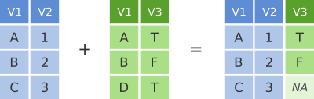
left_join() returns all rows from the first data frame
regardless of whether there is a match in the second data frame. Rows
with no match are included in the resulting data frame but have
NA values in the additional columns coming from the second
data frame.
Here’s an example in which details about members of the Beatles and Rolling Stones are contained in two tables, using data frames conveniently provided by dplyr (we’ll look at a real example shortly).
The name column identifies each of the band members and is used for
matching rows from the two tables. We specify the column (or columns) to
match on using the join_by() helper,
writing the column names without quotes just as we do elsewhere in the
tidyverse.
band_members## # A tibble: 3 × 2
## name band
## <chr> <chr>
## 1 Mick Stones
## 2 John Beatles
## 3 Paul Beatlesband_instruments## # A tibble: 3 × 2
## name plays
## <chr> <chr>
## 1 John guitar
## 2 Paul bass
## 3 Keith guitarleft_join(band_members, band_instruments, by = join_by(name))## # A tibble: 3 × 3
## name band plays
## <chr> <chr> <chr>
## 1 Mick Stones <NA>
## 2 John Beatles guitar
## 3 Paul Beatles bassWe have joined the band members and instruments tables based on the
common name column. Because this is a left join, only
observations for band members in the ‘left’ table
(band_members) are included with information brought in
from the ‘right’ table (band_instruments) where such
exists. There is no entry in band_instruments for Mick so
an NA value is inserted into the plays column
that gets added in the combined data frame. Keith is only included in
the band_instruments data frame so doesn’t make it into the
final output as this is based on those band members in the ‘left’
table.
right_join() is similar but returns all rows from the
second data frame, i.e. the ‘right’ data frame, that have a match with
rows in the first data frame.
right_join(band_members, band_instruments, by = join_by(name))## # A tibble: 3 × 3
## name band plays
## <chr> <chr> <chr>
## 1 John Beatles guitar
## 2 Paul Beatles bass
## 3 Keith <NA> guitarright_join() is used very infrequently compared with
left_join().
inner_join
Another joining operation is the “inner join” in which only observations that are common to both data frames are included.
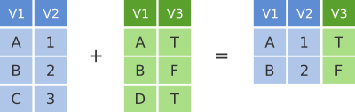
inner_join(band_members, band_instruments, by = join_by(name))## # A tibble: 2 × 3
## name band plays
## <chr> <chr> <chr>
## 1 John Beatles guitar
## 2 Paul Beatles bassIn this case when considering observations identified by
name, only John and Paul are contained in both the
band_members and band_instruments tables, so
only these make it into the combined table.
full_join
We’ve seen how missing rows from one table can be retained in the
joined data frame using left_join or
right_join but sometimes data for a given subject may be
missing from either of the tables and we still want that subject to
appear in the combined table. A full_join will return all
rows and all columns from the two tables and where there are no matching
values, NA values are used to fill in the missing
values.
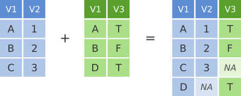
full_join(band_members, band_instruments, by = join_by(name))## # A tibble: 4 × 3
## name band plays
## <chr> <chr> <chr>
## 1 Mick Stones <NA>
## 2 John Beatles guitar
## 3 Paul Beatles bass
## 4 Keith <NA> guitarNow, with full_join(), we have rows for both Mick and
Keith even though they are only in one or other of the tables being
joined.
Joining on columns with different headers
It isn’t uncommon for the columns used for joining two tables to have
different names in each table. Of course we could rename one of the two
columns, e.g. using the dplyr rename() function, but the
dplyr join functions allow you to match using differently-named columns
as illustrated using another version of the
band_instruments data frame.
band_instruments2## # A tibble: 3 × 2
## artist plays
## <chr> <chr>
## 1 John guitar
## 2 Paul bass
## 3 Keith guitarleft_join(band_members, band_instruments2, by = join_by(name == artist))## # A tibble: 3 × 3
## name band plays
## <chr> <chr> <chr>
## 1 Mick Stones <NA>
## 2 John Beatles guitar
## 3 Paul Beatles bassHere join_by(name == artist) says “match the
name column in the left table against the
artist column in the right table”. The name for the column
used for joining in the combined table is the one given in the first
table, i.e. the ‘left’ table, so name rather than
artist in this case.
Multiple matches in join operations
You may be wondering what happens if there are multiple rows in one of both of the two tables for the thing that is being joined, for example what would happen if our second table had two entries for instruments that Paul plays.
Let’s add an extra instrument for Paul and see what happens when we
join the two tables. We’ll use the bind_rows() function to
add a row to the band_instruments tibble.
extra_instrument <- tibble(name = "Paul", plays = "guitar")
band_instruments3 <- bind_rows(band_instruments, extra_instrument)
band_instruments3## # A tibble: 4 × 2
## name plays
## <chr> <chr>
## 1 John guitar
## 2 Paul bass
## 3 Keith guitar
## 4 Paul guitarleft_join(band_members, band_instruments3, by = join_by(name))## # A tibble: 4 × 3
## name band plays
## <chr> <chr> <chr>
## 1 Mick Stones <NA>
## 2 John Beatles guitar
## 3 Paul Beatles bass
## 4 Paul Beatles guitarWe get both entries from the second table added to the first table.
Let’s add an entry for Paul being in a second band and see what happens then when we combine the two tables, each with two entries for Paul.
extra_band <- tibble(name = "Paul", band = "Wings")
band_members3 <- bind_rows(band_members, extra_band)
band_members3## # A tibble: 4 × 2
## name band
## <chr> <chr>
## 1 Mick Stones
## 2 John Beatles
## 3 Paul Beatles
## 4 Paul Wingsleft_join(band_members3, band_instruments3, by = join_by(name))## Warning in left_join(band_members3, band_instruments3, by = join_by(name)): Detected an unexpected many-to-many relationship between `x` and `y`.
## ℹ Row 3 of `x` matches multiple rows in `y`.
## ℹ Row 2 of `y` matches multiple rows in `x`.
## ℹ If a many-to-many relationship is expected, set `relationship = "many-to-many"` to silence this warning.## # A tibble: 6 × 3
## name band plays
## <chr> <chr> <chr>
## 1 Mick Stones <NA>
## 2 John Beatles guitar
## 3 Paul Beatles bass
## 4 Paul Beatles guitar
## 5 Paul Wings bass
## 6 Paul Wings guitarThe resulting table includes all combinations of band and instrument for Paul.
Notice that dplyr gave us a warning about an “unexpected many-to-many relationship”. Because Paul now appears twice in both tables, each of his two bands is paired with each of his two instruments, giving four rows from what were only two entries on each side. Most of the time this is a sign that something is wrong with your data, e.g. duplicated rows you weren’t expecting, which is why dplyr draws your attention to it. If it really is what you intended, you can say so explicitly and the warning goes away.
left_join(band_members3,
band_instruments3,
by = join_by(name),
relationship = "many-to-many")## # A tibble: 6 × 3
## name band plays
## <chr> <chr> <chr>
## 1 Mick Stones <NA>
## 2 John Beatles guitar
## 3 Paul Beatles bass
## 4 Paul Beatles guitar
## 5 Paul Wings bass
## 6 Paul Wings guitarJoining by matching on multiple columns
Sometimes the observations being combined are identified by multiple
columns, for example, a forename and a surname. We can list several
columns inside join_by() to be used in the join
operation.
Let’s add surnames and an additional band member to the
band_members and band_instruments tables and
then join the two tables based on both forename and surname. We’ll also
use rename to change the column name name to
forename.
extra_musician <- tibble(forename = "Paul",
surname = "Weller",
band = "The Jam")
band_members4 <- band_members |>
rename(forename = name) |>
mutate(surname = c("Jagger", "Lennon", "McCartney")) |>
bind_rows(extra_musician) |>
select(forename, surname, band)
extra_instrument <- tibble(forename = "Paul",
surname = "Weller",
plays = "guitar")
band_instruments4 <- band_instruments |>
rename(forename = name) |>
mutate(surname = c("Lennon", "McCartney", "Richards")) |>
bind_rows(extra_instrument) |>
select(forename, surname, plays)
band_members4## # A tibble: 4 × 3
## forename surname band
## <chr> <chr> <chr>
## 1 Mick Jagger Stones
## 2 John Lennon Beatles
## 3 Paul McCartney Beatles
## 4 Paul Weller The Jamband_instruments4## # A tibble: 4 × 3
## forename surname plays
## <chr> <chr> <chr>
## 1 John Lennon guitar
## 2 Paul McCartney bass
## 3 Keith Richards guitar
## 4 Paul Weller guitarfull_join(band_members4, band_instruments4, by = join_by(forename, surname))## # A tibble: 5 × 4
## forename surname band plays
## <chr> <chr> <chr> <chr>
## 1 Mick Jagger Stones <NA>
## 2 John Lennon Beatles guitar
## 3 Paul McCartney Beatles bass
## 4 Paul Weller The Jam guitar
## 5 Keith Richards <NA> guitarClashing column names
Occasionally we may find that there are duplicated columns in the two tables we want to join, columns that aren’t those used for joining. These variables may even contain different data but happen to have the same name. In such cases dplyr joins add a suffix to each column in the combined table.
band_members5 <- band_members |>
mutate(birth_year = c(1943, 1940, 1942))
band_instruments5 <- band_instruments |>
mutate(birth_year = c(1940, 1942, 1943))
left_join(band_members5, band_instruments5, by = join_by(name))## # A tibble: 3 × 5
## name band birth_year.x plays birth_year.y
## <chr> <chr> <dbl> <chr> <dbl>
## 1 Mick Stones 1943 <NA> NA
## 2 John Beatles 1940 guitar 1940
## 3 Paul Beatles 1942 bass 1942It is advisable to rename or remove the duplicated columns that aren’t used for joining.
A real example: joining the METABRIC clinical and mRNA expression data
Let’s move on to a real example of joining data from two different tables that we used in putting together the combined METABRIC clinical and expression data set.
We first read the clinical data into R and then just select a small number of columns to make it easier to see what is going on when combining the data.
clinical_data <- read_csv("data/metabric_clinical_data.csv")
clinical_data <- select(clinical_data, Patient_ID, ER_status, PAM50)
clinical_data## # A tibble: 2,509 × 3
## Patient_ID ER_status PAM50
## <chr> <chr> <chr>
## 1 MB-0000 Positive claudin-low
## 2 MB-0002 Positive LumA
## 3 MB-0005 Positive LumB
## 4 MB-0006 Positive LumB
## 5 MB-0008 Positive LumB
## 6 MB-0010 Positive LumB
## 7 MB-0014 Positive LumB
## 8 MB-0020 Negative Normal
## 9 MB-0022 Positive claudin-low
## 10 MB-0025 Positive <NA>
## # ℹ 2,499 more rowsWe then read in the mRNA expression data that was downloaded separately from cBioPortal.
mrna_expression_data <- read_tsv("data/metabric_mrna_expression.txt")
mrna_expression_data## # A tibble: 2,509 × 10
## STUDY_ID SAMPLE_ID ESR1 ERBB2 PGR TP53 PIK3CA GATA3 FOXA1 MLPH
## <chr> <chr> <dbl> <dbl> <dbl> <dbl> <dbl> <dbl> <dbl> <dbl>
## 1 brca_metabric MB-0000 8.93 9.33 5.68 6.34 5.70 6.93 7.95 9.73
## 2 brca_metabric MB-0002 10.0 9.73 7.51 6.19 5.76 11.3 11.8 12.5
## 3 brca_metabric MB-0005 10.0 9.73 7.38 6.40 6.75 9.29 11.7 10.3
## 4 brca_metabric MB-0006 10.4 10.3 6.82 6.87 7.22 8.67 11.9 10.5
## 5 brca_metabric MB-0008 11.3 9.96 7.33 6.34 5.82 9.72 11.6 12.2
## 6 brca_metabric MB-0010 11.2 9.74 5.95 5.42 6.12 9.79 12.1 11.4
## 7 brca_metabric MB-0014 10.8 9.28 7.72 5.99 7.48 8.37 11.5 10.8
## 8 brca_metabric MB-0020 NA NA NA NA NA NA NA NA
## 9 brca_metabric MB-0022 10.4 8.61 5.59 6.17 7.59 7.87 10.7 9.95
## 10 brca_metabric MB-0025 NA NA NA NA NA NA NA NA
## # ℹ 2,499 more rowsNow we have both sets of data loaded into R as data frames, we can
combine them into a single data frame using an
inner_join(). Our resulting table will only contain entries
for the patients for which expression data are available.
combined_data <- inner_join(clinical_data,
mrna_expression_data,
by = join_by(Patient_ID == SAMPLE_ID))
combined_data## # A tibble: 2,509 × 12
## Patient_ID ER_status PAM50 STUDY_ID ESR1 ERBB2 PGR TP53 PIK3CA GATA3
## <chr> <chr> <chr> <chr> <dbl> <dbl> <dbl> <dbl> <dbl> <dbl>
## 1 MB-0000 Positive claudin-l… brca_me… 8.93 9.33 5.68 6.34 5.70 6.93
## 2 MB-0002 Positive LumA brca_me… 10.0 9.73 7.51 6.19 5.76 11.3
## 3 MB-0005 Positive LumB brca_me… 10.0 9.73 7.38 6.40 6.75 9.29
## 4 MB-0006 Positive LumB brca_me… 10.4 10.3 6.82 6.87 7.22 8.67
## 5 MB-0008 Positive LumB brca_me… 11.3 9.96 7.33 6.34 5.82 9.72
## 6 MB-0010 Positive LumB brca_me… 11.2 9.74 5.95 5.42 6.12 9.79
## 7 MB-0014 Positive LumB brca_me… 10.8 9.28 7.72 5.99 7.48 8.37
## 8 MB-0020 Negative Normal brca_me… NA NA NA NA NA NA
## 9 MB-0022 Positive claudin-l… brca_me… 10.4 8.61 5.59 6.17 7.59 7.87
## 10 MB-0025 Positive <NA> brca_me… NA NA NA NA NA NA
## # ℹ 2,499 more rows
## # ℹ 2 more variables: FOXA1 <dbl>, MLPH <dbl>Having combined the data, we can carry out exploratory data analysis using elements from both data sets.
combined_data |>
filter(!is.na(PAM50), !is.na(ESR1)) |>
ggplot(mapping = aes(x = PAM50, y = ESR1, colour = PAM50)) +
geom_boxplot(show.legend = FALSE)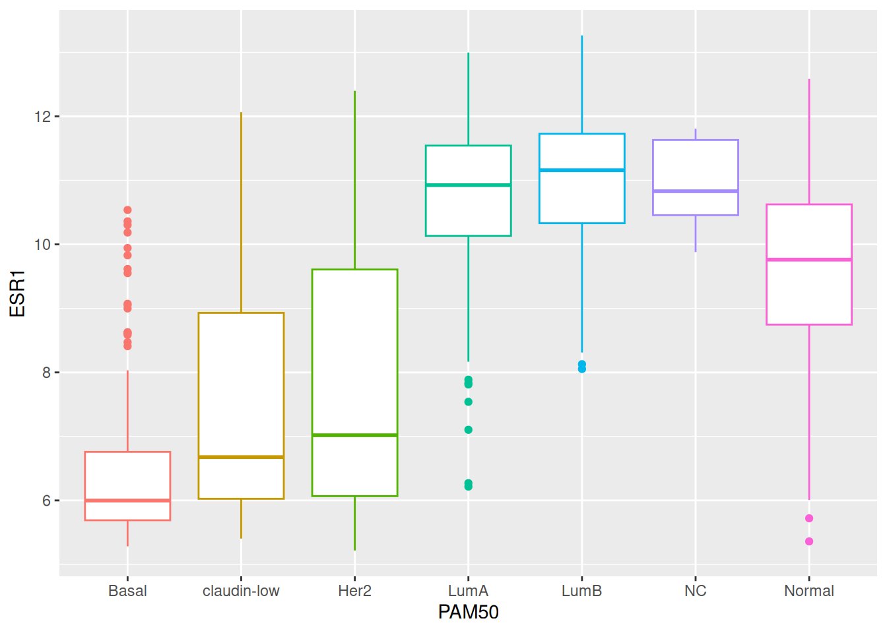
Customizing plots with ggplot2
Finally, we’ll turn our attention back to visualization using ggplot2 and how we can customize our plots by adding or changing titles and labels, changing the scales used on the x and y axes, and choosing colours.
Titles and labels
Adding titles and subtitles to a plot and changing the x- and y-axis
labels is very straightforward using the labs()
function.
ggplot(metabric, mapping = aes(x = GATA3, y = ESR1, colour = ER_status)) +
geom_point(size = 0.6, alpha = 0.5) +
geom_smooth(method = "lm") +
labs(title = "mRNA expression in the METABRIC breast cancer data set",
subtitle = "Expression measured with Illumina bead arrays",
x = "log2 GATA3 expression",
y = "log2 ESR1 expression",
colour = "ER status")## `geom_smooth()` using formula = 'y ~ x'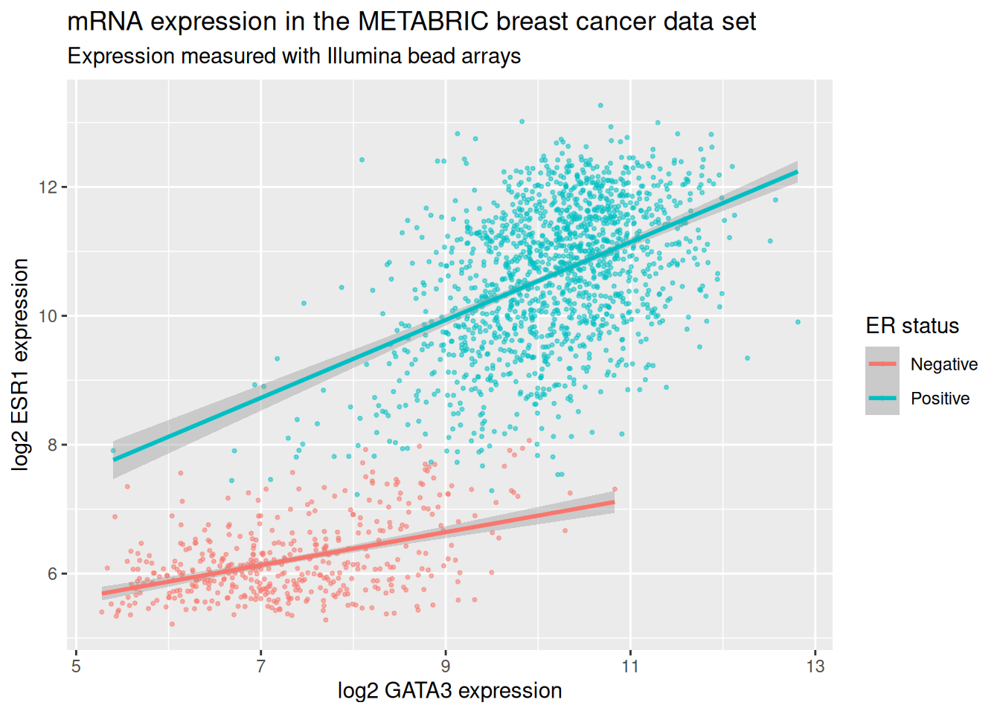
The labels are another component of the plot object that we’ve
constructed, along with aesthetic mappings and layers (geoms). The plot
object is a list and contains various elements including those mappings
and layers and one element named labels.
labs() is a simple function for creating a list of
labels you want to specify as name-value pairs as in the above example.
You can name any aesthetic (in this case x and y) to override the
default values (the column names) and you can add a title, subtitle and
caption if you wish. In addition to changing the x- and y-axis labels,
we also removed the underscore from the legend title by setting the
label for the colour aesthetic.
Scales
Take a look at the x and y scales in the above plot. ggplot2 has chosen the x and y scales and where to put breaks and ticks.
The x and y variables (GATA3 and ESR1) are
continuous so ggplot2 adds a continuous scale for each.
ER_status is a discrete variable in this case so ggplot2
adds a discrete scale for colour.
In addition to geom_XXXX layers for different geometries, we can also add use scale layers to modify the scales to our liking. The general format for the scale names is:
scale_<NAME_OF_AESTHETIC>_<NAME_OF_SCALE>Look at the help page for scale_y_continuous to see what
we can change about the y-axis scale.
First we’ll change the breaks, i.e. where ggplot2 puts ticks and numeric labels, on the y axis.
ggplot(data = metabric,
mapping = aes(x = GATA3, y = ESR1, colour = ER_status)) +
geom_point(size = 0.6, alpha = 0.5) +
geom_smooth(method = "lm") +
scale_y_continuous(breaks = seq(5, 15, by = 2.5))## `geom_smooth()` using formula = 'y ~ x'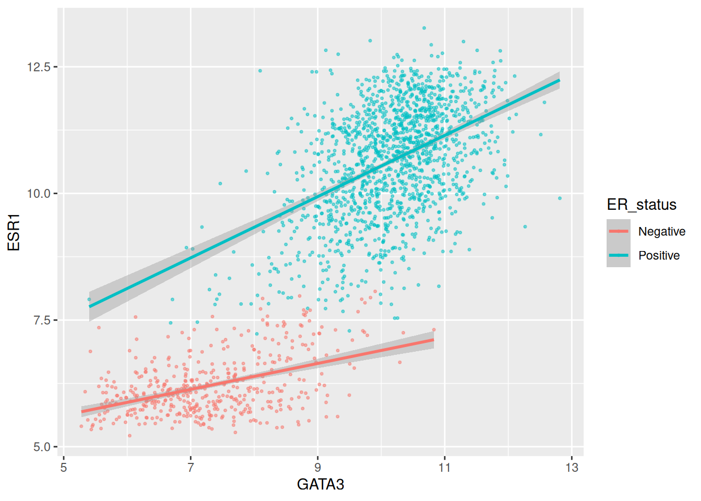
seq() is a useful function for generating regular
sequences of numbers. In this case we wanted numbers from 5 to 15 going
up in steps of 2.5.
seq(5, 15, by = 2.5)## [1] 5.0 7.5 10.0 12.5 15.0We could do the same thing for the x axis using
scale_x_continuous().
We can also adjust the extents of the x or y axis.
ggplot(data = metabric,
mapping = aes(x = GATA3, y = ESR1, colour = ER_status)) +
geom_point(size = 0.6, alpha = 0.5) +
geom_smooth(method = "lm") +
scale_y_continuous(breaks = seq(5, 15, by = 2.5), limits = c(4, 12))## `geom_smooth()` using formula = 'y ~ x'## Warning: Removed 160 rows containing non-finite outside the scale range
## (`stat_smooth()`).## Warning: Removed 160 rows containing missing values or values outside the scale
## range (`geom_point()`).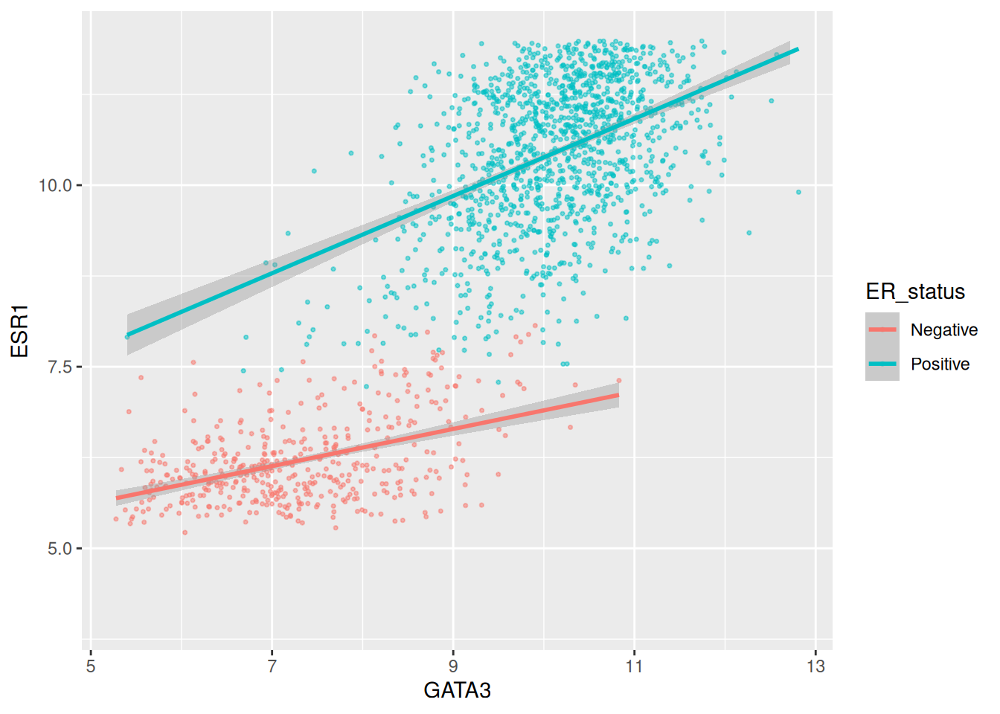
Here, just for demonstration purposes, we set the upper limit to be less than the largest values of ESR1 expression and ggplot2 warned us that some rows have been removed from the plot.
Another way to alter the way the plot looks is to define a
theme(). The theme controls the way in
which non-data components are displayed. You can specify your own
themes, e.g. to remove the grid lines you would do:
ggplot(data = metabric,
mapping = aes(x = GATA3, y = ESR1, colour = ER_status)) +
geom_point(size = 0.6, alpha = 0.5) +
theme(panel.grid = element_blank())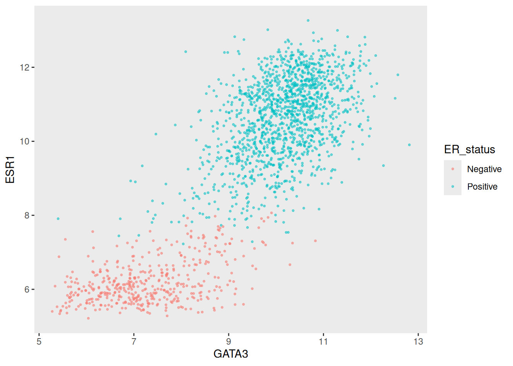
We wont cover themes in any more detail in this course, but you can use them to control pretty much any aspect of the plot. On the other hand, there are also a number of predefined themes (and more available in packages such as ggtheme). For example the “minimal” theme:
ggplot(data = metabric,
mapping = aes(x = GATA3, y = ESR1, colour = ER_status)) +
geom_point(size = 0.6, alpha = 0.5) +
theme_minimal()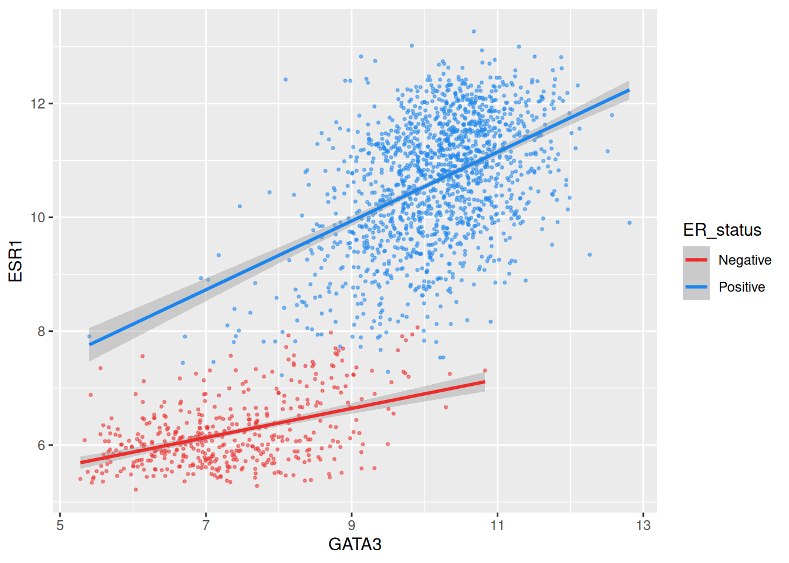
Colours
The colour aesthetic is used with a categorical variable,
ER_status, in the scatter plots we’ve been customizing. The
default colour scale used by ggplot2 for categorical variables is
scale_colour_discrete. We can manually set the colours we
wish to use using scale_colour_manual instead.
ggplot(data = metabric,
mapping = aes(x = GATA3, y = ESR1, colour = ER_status)) +
geom_point(size = 0.6, alpha = 0.5) +
geom_smooth(method = "lm") +
scale_colour_manual(values = c("dodgerblue2", "firebrick2"))## `geom_smooth()` using formula = 'y ~ x'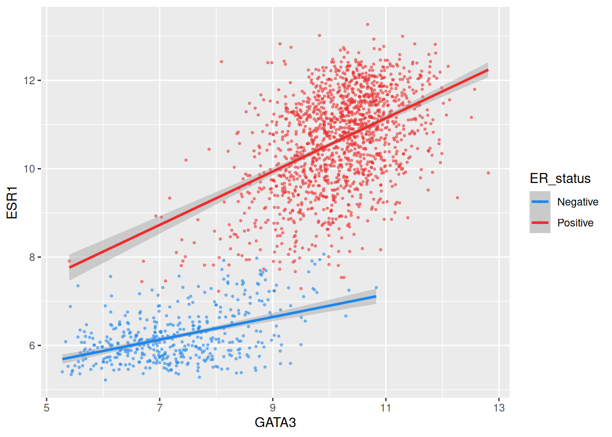
If we wanted to specify that “dodgerblue2” should be the colour for “Positive” and “firebrick2” for “Negative”, we need to add names to the values vector:
ggplot(data = metabric,
mapping = aes(x = GATA3, y = ESR1, colour = ER_status)) +
geom_point(size = 0.6, alpha = 0.5) +
geom_smooth(method = "lm") +
scale_colour_manual(values = c(Positive = "dodgerblue2",
Negative = "firebrick2"))## `geom_smooth()` using formula = 'y ~ x'
Setting colours manually is ok when we only have two or three
categories but when we have a larger number it would be handy to be able
to choose from a selection of carefully-constructed colour palettes.
Helpfully, ggplot2 provides access to the ColorBrewer palettes through the
functions scale_colour_brewer() and
scale_fill_brewer().
ggplot(data = metabric,
mapping = aes(x = GATA3, y = ESR1, colour = `3-gene_classifier`)) +
geom_point(size = 0.6, alpha = 0.5, na.rm = TRUE) +
scale_colour_brewer(palette = "Set1")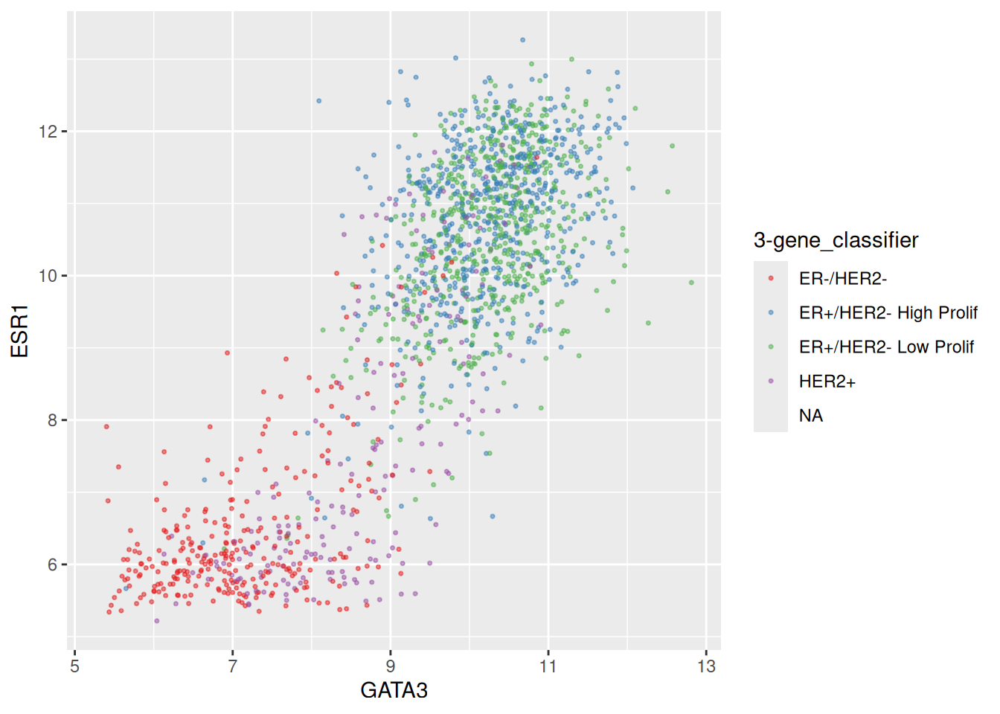
Look at the help page for scale_colour_brewer to see
what other colour palettes are available and visit the ColorBrewer website to see what
these look like.
We can also set other attributes of the scale at the same time. For
example, we could change the names (labels) of the categories. Just as
with values, it is much safer to name the
labels as well. If you supply them as a plain unnamed
vector they are matched up in the order the categories appear in the
data, which is not necessarily the order you wrote them in, and you can
end up with a legend that is mislabelled.
ggplot(data = metabric,
mapping = aes(x = GATA3, y = ESR1, colour = ER_status)) +
geom_point(size = 0.6, alpha = 0.5) +
geom_smooth(method = "lm") +
scale_colour_manual(values = c(Positive = "dodgerblue2",
Negative = "firebrick2"),
labels = c(Positive = "ER-positive",
Negative = "ER-negative"))## `geom_smooth()` using formula = 'y ~ x'
We have applied our own set of mappings from levels in the data to aesthetic values.
For continuous variables we may wish to be able to change the colours used in the colour gradient. To demonstrate we’ll use the Nottingham prognostic index (NPI) values to colour points in the scatter plot of ESR1 vs GATA3 expression on a continuous scale.
ggplot(data = metabric,
mapping = aes(x = GATA3,
y = ESR1,
colour = Nottingham_prognostic_index)) +
geom_point(size = 0.6, alpha = 0.5)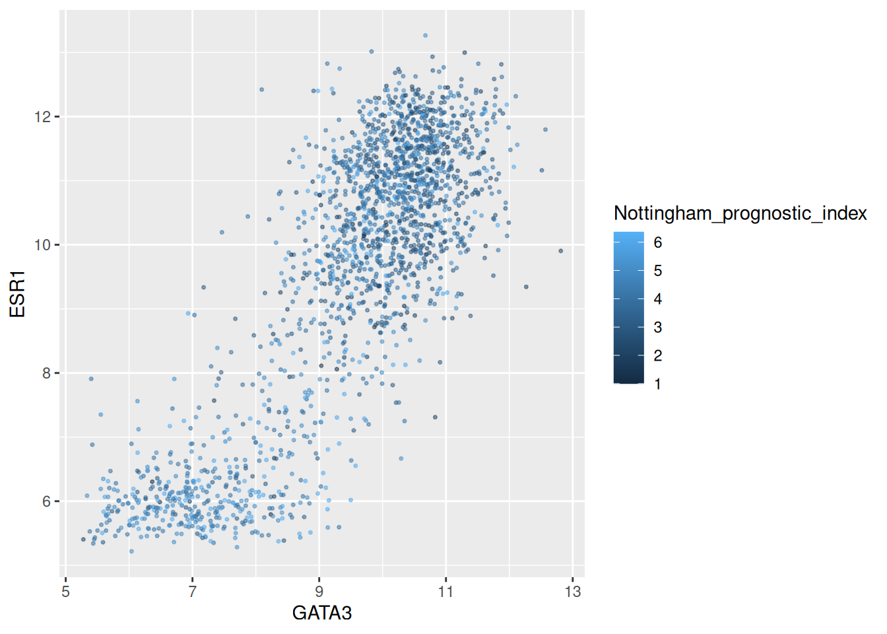
ggplot2 by default uses this black to blue continuous scale. Higher NPI scores correspond to worse prognosis and lower chance of 5 year survival. We’ll emphasize those points on the scatter plot by adjusting our colour scale to run from white to red.
metabric |>
ggplot(mapping = aes(x = GATA3,
y = ESR1,
colour = Nottingham_prognostic_index)) +
geom_point(size = 0.75) +
scale_colour_gradient(low = "white", high = "red")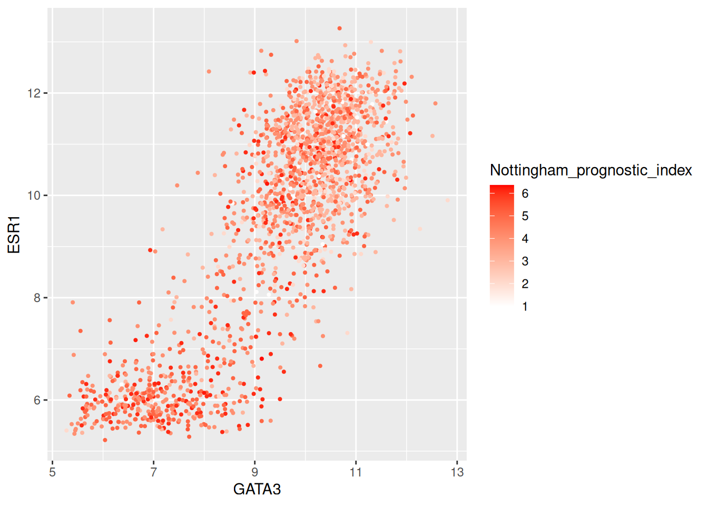
In some cases it might make sense to specify two colour gradients either side of a mid-point.
metabric |>
ggplot(mapping = aes(x = GATA3,
y = ESR1,
colour = Nottingham_prognostic_index)) +
geom_point(size = 0.75) +
scale_colour_gradient2(low = "dodgerblue1",
mid = "grey90",
high = "firebrick1",
midpoint = 4.5)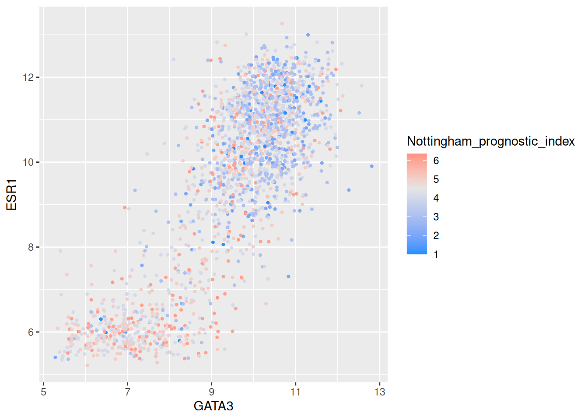
Summary
In this session we have covered the following:
- Computing summary values for groups of observations
- Counting the numbers of observations within categories
- Combining data from two tables through join operations
- Customizing plots created with ggplot2 by changing labels, scales and colours
Exercises
- Compute the average survival time for the ER-negative and ER-positive groups. Note that such a comparison only makes sense for those patients that are deceased so apply the appropriate filter first. Add a column for the number of patients in each group. You can use “metabric_clinical_data.csv” file.
Answer
library(tidyverse)
metabric <- read_csv("data/metabric_clinical_data.csv")
metabric |>
filter(Survival_status == "DECEASED") |>
group_by(ER_status) |>
summarize(`Average survival time` = mean(Survival_time), N = n())## # A tibble: 2 × 3
## ER_status `Average survival time` N
## <chr> <dbl> <int>
## 1 Negative 66.3 262
## 2 Positive 111. 882- Compute the average tumour size, number of positive lymph nodes and Nottingham prognostic index within ER-negative and ER-positive patients.
Answer
library(tidyverse)
metabric <- read_csv("data/metabric_clinical_data.csv")
metabric |>
group_by(ER_status) |>
summarize(across(c(Tumour_size,
Lymph_nodes_examined_positive,
Nottingham_prognostic_index),
mean, na.rm = TRUE))## # A tibble: 3 × 4
## ER_status Tumour_size Lymph_nodes_examined_positive Nottingham_prognostic_in…¹
## <chr> <dbl> <dbl> <dbl>
## 1 Negative 28.3 2.62 4.60
## 2 Positive 25.4 1.73 3.86
## 3 <NA> 35 1.70 2.26
## # ℹ abbreviated name: ¹Nottingham_prognostic_index- Count the numbers of mutations for each gene and display the top 10 most frequently mutated genes using metabric_mutations.csv data.
Answer
mutations <- read_csv("data/metabric_mutations.csv")
mutations |>
count(Gene) |>
arrange(desc(n)) |>
head(10)## # A tibble: 10 × 2
## Gene n
## <chr> <int>
## 1 PIK3CA 1122
## 2 TP53 897
## 3 AHNAK2 859
## 4 MUC16 666
## 5 SYNE1 468
## 6 KMT2C 389
## 7 MAP3K1 372
## 8 AHNAK 327
## 9 GATA3 301
## 10 DNAH11 300- In breast cancers, PIK3CA and TP53 are the most commonly mutated genes with mutations occurring in specific regions of the gene. Find out which codons of PIK3CA are most commonly mutated.
Answer
mutations |>
filter(Gene == "PIK3CA") |>
count(Codon) |>
arrange(desc(n))## # A tibble: 88 × 2
## Codon n
## <dbl> <int>
## 1 1047 471
## 2 545 192
## 3 542 101
## 4 345 64
## 5 726 28
## 6 546 26
## 7 420 19
## 8 111 13
## 9 1043 12
## 10 108 10
## # ℹ 78 more rows- Use boxplots to illustrate the distribution of diagnosis age for 3-gene classification groups of patients. Remove any patients who are unclassified. The boxplots should be coloured according to the group.
Answer
metabric |>
filter(!is.na(`3-gene_classifier`)) |>
ggplot(mapping = aes(x = `3-gene_classifier`,
y = Age_at_diagnosis,
colour = `3-gene_classifier`)) +
geom_boxplot() +
scale_colour_discrete(name = "3 gene classifier")
- Compare the prevalence of TP53 mutations across the Integrative Cluster breast cancer subtypes.
Figure 5a from the METABRIC 2016 paper compares the percentage of samples that have non-silent mutations for various genes within each of the Integrative Clusters. In this exercise we’ll reproduce a version of one of those bar charts for the TP53 gene.
We need a bit of setup first. The METABRIC cohort contains 2509
patients but not all tumour samples were sequenced, so we read the case
list of sequenced samples and add a column indicating this. We also
convert Integrative_cluster into a factor so that the
clusters appear in the correct order rather than alphabetically.
metabric <- read_csv("data/metabric_clinical_data.csv")
mutations <- read_csv("data/metabric_mutations.csv")
metabric <- metabric |>
mutate(Integrative_cluster = factor(Integrative_cluster,
levels = c("1", "2", "3", "4ER-",
"4ER+", "5", "6", "7",
"8", "9", "10")))
cases_sequenced <- read_tsv("data/cases_nat_comm_2016.txt",
col_names = "Patient_ID")
metabric <- metabric |>
mutate(Sequenced = Patient_ID %in% cases_sequenced$Patient_ID)
count(metabric, Sequenced)## # A tibble: 2 × 2
## Sequenced n
## <lgl> <int>
## 1 FALSE 76
## 2 TRUE 2433a. Create a data frame containing the number of non-silent TP53 mutations in
each patient sample, with two columns, `Patient_ID` and
`TP53_mutation_count`. Join this to the `metabric` data frame.
b. Create a new column `Has_TP53_mutation` containing `TRUE` or `FALSE`.
*Hint: use the `is.na()` function.*
c. Compute the percentage of patient samples within each Integrative Cluster
that have a TP53 mutation, excluding samples that were not sequenced and
those not classified into one of the clusters.
d. Plot these percentages as a bar chart using `geom_col()`. Look at the help
pages for `geom_bar` and `geom_col` to see why we want the latter here. Then
add a title, tidy up the axis labels, show the full 0-100% range with breaks
every 20%, remove the gap between the bars and the axis, apply the Viridis
colour scheme (`scale_fill_viridis_d`), and use `theme_bw()` with the
vertical grid lines removed.Answer
Exercise 6a: count the non-silent TP53 mutations per patient and join them on.
tp53_mutation_counts <- mutations |>
filter(Gene == "TP53", Variant_Classification != "Silent") |>
count(Patient_ID, name = "TP53_mutation_count")
metabric <- left_join(metabric, tp53_mutation_counts, by = join_by(Patient_ID))Exercise 6b: patients with no entry in the count column have no non-silent TP53 mutation.
metabric <- metabric |>
mutate(Has_TP53_mutation = !is.na(TP53_mutation_count))Exercise 6c: taking the mean of a logical variable gives the
proportion that are TRUE.
tp53_percentages <- metabric |>
filter(Sequenced) |>
filter(!is.na(Integrative_cluster)) |>
summarise(Percentage_TP53_mutation = 100 * mean(Has_TP53_mutation),
.by = Integrative_cluster)
tp53_percentages## # A tibble: 11 × 2
## Integrative_cluster Percentage_TP53_mutation
## <fct> <dbl>
## 1 4ER+ 22.5
## 2 3 11.3
## 3 9 47.9
## 4 7 15.9
## 5 4ER- 60.8
## 6 5 71.2
## 7 8 4.84
## 8 10 87.7
## 9 1 28.8
## 10 2 26.4
## 11 6 42.9Exercise 6d: the basic bar chart.
ggplot(data = tp53_percentages) +
geom_col(mapping = aes(x = Integrative_cluster,
y = Percentage_TP53_mutation))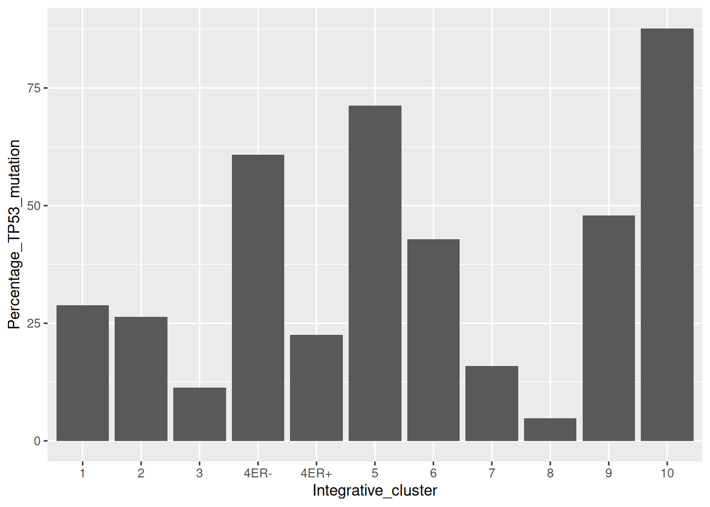
And with the customizations applied.
ggplot(data = tp53_percentages) +
geom_col(mapping = aes(x = Integrative_cluster,
y = Percentage_TP53_mutation,
fill = Integrative_cluster),
show.legend = FALSE) +
labs(title = "Prevalence of TP53 mutations across Integrative Clusters",
x = "Integrative Cluster",
y = "% samples") +
scale_y_continuous(breaks = c(0, 20, 40, 60, 80, 100),
expand = expansion(mult = 0),
limits = c(0, 100)) +
scale_fill_viridis_d() +
theme_bw() +
theme(panel.grid.major.x = element_blank())
Compare this with figure 5a from the METABRIC mutation paper. Do the bars look to be in roughly the correct proportions? Note that only 9 of the integrative clusters are shown in figure 5a.
- Compute the tumour suppressor gene (TSG) score for each gene.
The TSG score is the proportion of inactivating mutations for each gene out of the total number of mutations for that gene. Inactivating mutations are nonsense SNVs, frameshift substitutions and variants that affect splice sites.
Compute the TSG score for each gene and find the top 10 tumour suppressor genes, i.e. those with the highest TSG scores.
Hint: use %in% to determine whether a mutation is an
inactivating mutation.
Answer
inactivating_mutation_types <- c("Nonsense_Mutation",
"Frame_Shift_Del",
"Frame_Shift_Ins",
"Splice_Region",
"Splice_Site")
tsg_scores <- mutations |>
mutate(Inactivating =
Variant_Classification %in% inactivating_mutation_types) |>
summarise(TSG_score = mean(Inactivating), .by = Gene)
tsg_scores |>
arrange(desc(TSG_score)) |>
head(10)## # A tibble: 10 × 2
## Gene TSG_score
## <chr> <dbl>
## 1 CDH1 0.815
## 2 GATA3 0.734
## 3 CBFB 0.655
## 4 MAP3K1 0.653
## 5 GPS2 0.649
## 6 ZFP36L1 0.606
## 7 PTEN 0.6
## 8 RUNX1 0.571
## 9 TBX3 0.553
## 10 MAP2K4 0.547Organised by


Funded by